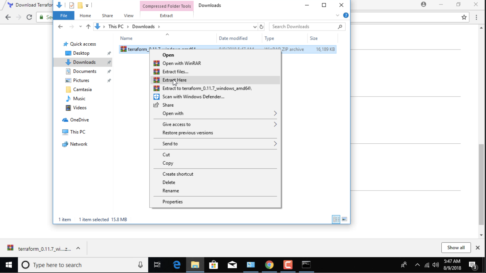

Environement Setup
Terraform Installation
Ubuntu
Follow the following steps to install Terraform on ubuntu.
wget https://releases.hashicorp.com/terraform/0.11.8/terraform_0.11.8_linux_amd64.zip
unzip terraform_0.11.8_linux_amd64.zip
sudo mv terraform /usr/bin/local
sudo chmod +x /usr/bin/local/terraform
Windows
Visit the following link to download the Terraform executable.
Extract the file.

Copy the extracted file.

Create a new directory called Terrafrom insice C:\Program Files\

Paste the file we have copied in the previous step.

Copy the file path for the executable.

Search for environment from your start menu.

Then select environment variables form the window.

Select Path variable and edit it.

Add the path that we have copied earlier.

MacOS
wget https://releases.hashicorp.com/terraform/0.11.8/terraform_0.11.8_darwin_amd64.zip
unzip terraform_0.11.8_darwin_amd64.zip
sudo mv terraform /usr/bin/local
sudo chmod +x /usr/bin/local/terraform
Validate the Installation
Open a Shell session and run terraform -v. This should produce the following output.
terraform -v
[output]
Terraform v0.11.7